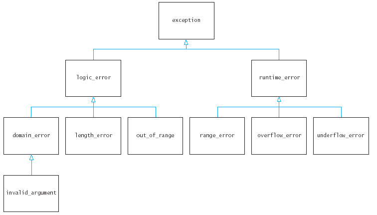

vector<int> v_i;
vector<double> v_d;
vector<Employee> v_e;
template<typename T>
class Pair {
public:
Pair(T a, T b);
T get_first() const;
T get_second() const;
private:
T first;
T second;
};
|
Syntax 17.3 : Template Class Definition template<typename type_variable>
|
template<typename T>
Pair<T>::Pair(T a, T b)
{ first = a;
second = b;
}
template<typename T>
T Pair<T>::get_first() const
{ return first;
}
template<typename T>
T Pair<T>::get_second() const
{ return second;
}
|
Syntax 17.4 : Template Member Function Definition template<typename type_variable>
|
double future_value(double initial_balance, double p, int n)
{ return initial_balance * pow(1 + p / 100, n);
}
double future_value(double initial_balance, double p, int n)
{ if (p < 0 || n < 0) return 0;
return initial_balance * pow(1 + p / 100, n);
}
double future_value(double initial_balance, double p, int n)
{ assert(p >= 0 && n >= 0);
return initial_balance * pow(1 + p / 100, n);
}
double future_value(double initial_balance, double p, int n)
{ if (p < 0 || n < 0)
{ logic_error description("illegal future_value parameter");
throw description;
}
return initial_balance * pow(1 + p / 100, n);
}
double future_value(double initial_balance, double p, int n)
{ if (p < 0 || n < 0)
throw logic_error("illegal future_value parameter");
return initial_balance * pow(1 + p / 100, n);
}
|
Syntax 17.8: Throwing an Exception throw expression;
|
try
{
code
}
catch (logic_error& e)
{
handler
}
|
Syntax 17.9: Try Block try
|
while (more)
{ try
{
code
}
catch (logic_error& e)
{ cout << "A logic error has occurred "
<< e.what() << "\n" << "Retry? (y/n)";
string input;
getline(cin, input);
if (input == "n") more = false;
}
}
class FutureValueError : public logic_error {
public:
FutureValueError(const char reason[]);
};
FutureValueError::FutureValueError(const char reason[])
: logic_error(reason){}
if (p < 0 || n < 0)
throw FutureValueError("illegal parameter");
try
{
code
}
catch (FutureValueError& e)
{
handler1
}
catch (logic_error& e)
{
handler2
}
bool Product::read(fstream& fs)
{ getline(fs, name);
if (name == "") return false; // end of file
fs >> price >> score;
if (fs.fail())
throw runtime_error("Error while reading product");
string remainder;
getline(fs, remainder);
return true;
}

void process_products(fstream& fs)
{ vector<Product> products;
bool more = true;
while (more)
{ Product p;
if (p.read(fs)) products.push_back(p);
else more = false;
}
do something with products
}
Product* p = new Product();
if (p->read())
{
...
}
delete p; // never executes if read throws an exception
Product* p = NULL;
try
{ p = new Product();
if (p->read())
{
...
}
delete p;
}
catch(...)
{ delete p;
throw;
}
void process_products(fstream& fs)
throw (UnexpectedEndOfFile, bad_alloc)
void process_products(fstream& fs)
throw ()
|
Syntax 17.10 : Exception Specification return_type function_name(parameters)
|